资源
- GAMES104-现代游戏引擎：从入门到实践_哔哩哔哩_bilibili
- GAMES104 - 现代游戏引擎入门必修课 (boomingtech.com)
- Piccolo 社区 - 游戏引擎爱好者的新家园 (piccoloengine.com)
- BoomingTech/Piccolo: Piccolo (formerly Pilot) – mini game engine for games104 (github.com)
- GAMES104：现代游戏引擎，从理论到实践 - 知乎 (zhihu.com)
课程
第十三节：引擎工具链基础
Outline of Tool Chains
Foundation of Tool Chains
-
What is Game Engine Tool Chains
什么是游戏引擎工具链
-
Complicated Tool GUI
复杂的工具 GUI
-
How to Load Asset -Deserialization
如何加载资产-反序列化
-
How to Make a Robust Tools
如何制作强大的工具
-
How to Make Tool Chain
如何制作工具链
-
What You See is What You Get
所见即所得
-
One More Thing - Plugin
还有一件事 - 插件
Applications & Advanced Topic
-
Common Game Production Workflow
常见的游戏制作工作流程
-
Common Editors
常见的编辑
-
Reflection
反射
-
Collaborative Editing
协作编辑
What is Game Engine Tool Chain
什么是游戏引擎工具链？
Layer Between Users and Engine Runtime
用户和引擎运行时之间的层。让用户更好地操作游戏引擎写游戏。
{kind=link}
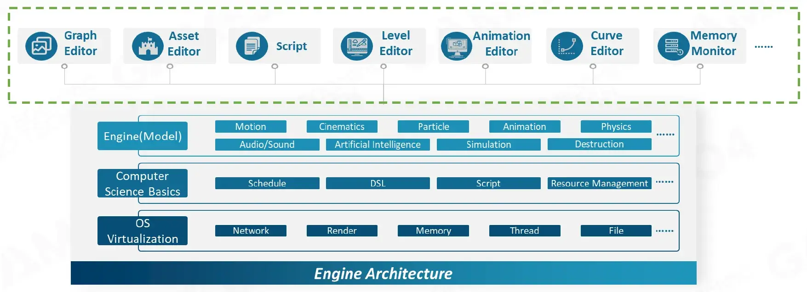
Bridge Between DCC Tools and Game Engine
DCC 工具和游戏引擎之间的桥梁
{kind=link}
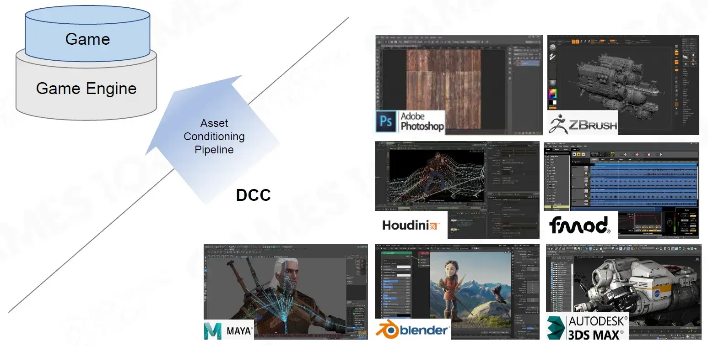
让游戏引擎能够读取用户使用各种工具创造的艺术资源。
Let Huge Different Mindset Users Work Together
让不同心态的用户共同合作
{kind=link}
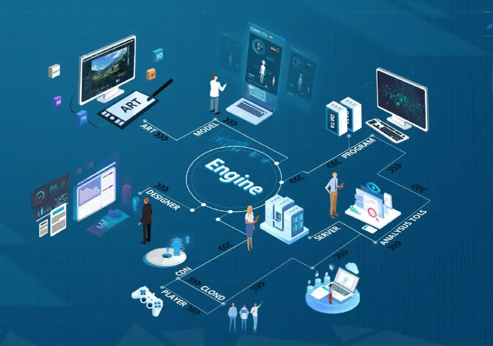
For Designers
对于设计师
-
lterate the gameplay quickly
快速迭代游戏玩法
-
Implement game logic prototype quickly even without programming
无需编程即可快速实现游戏逻辑原型
-
Edit massive data easily
轻松编辑海量数据
For Artists
对于艺术家
-
The quality of the result
结果质量
-
Convenient workflow
便捷的工作流程
-
What you see is what you get (WYSIWYG)
所见即所得 (WYSIWYG)
Complicated Tool GUI
复杂的工具 GUI
Graphics User interface (GUI)
图形用户界面 (GUl)
{kind=link}
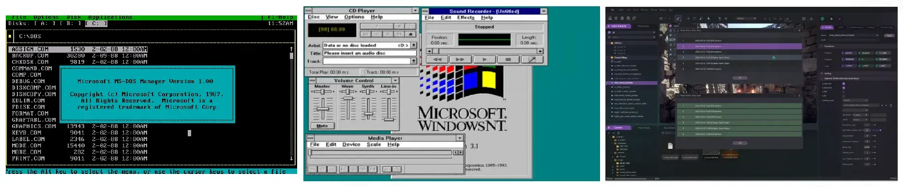
GUl is getting more and more complex
GUI 越来越复杂
-
Fast iteration
快速迭代
-
Separation of design and implementation
设计和实现分离
-
Reusability
可重用性
-
...
Immediate Mode
{kind=link}
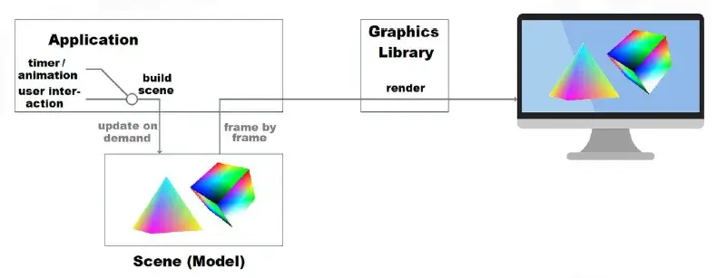
-
The client calls cause rendering of graphics objects to the display.
客户端调用导致图形对象渲染到显示器。
-
the data to describe rendering primitives is inserted frame by frame directly from the client into a command list.
描述渲染图元的数据直接从客户端逐帧插入到命令列表中
Imgui::DrawButton("hello", 12, 24, &callback_func);{kind=link}
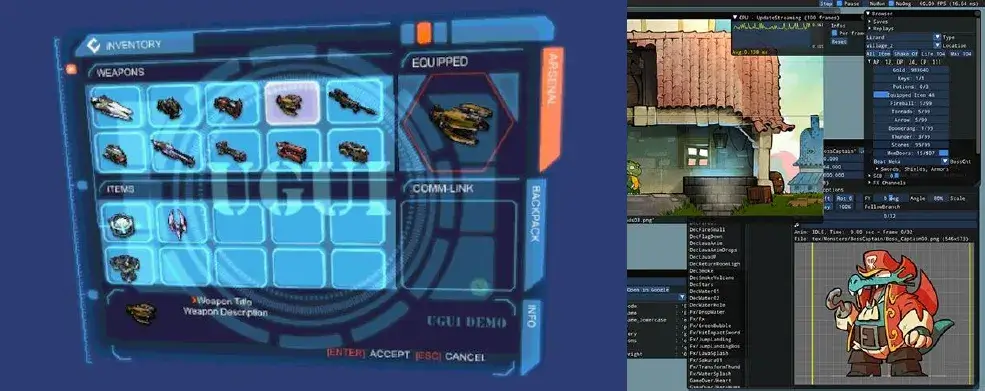
Characteristic
特点
-
Lightweight
轻量级
-
Procedural programming
程序化编程
-
Widgets don't maintain any data or state
小部件不维护任何数据或状态
Pros
优点
-
Straightforward
直接
-
Simple
简单
-
Quick prototype
快速原型
Cons
缺点
-
Poor scalability
可扩展性差
-
Poor performance
性能差
-
Poor maintainability
可维护性差
Examples
示例
- Unity UGUI
- Omniverse GUl
- Piccolo GUl
Retained Mode
保留模式
{kind=link}
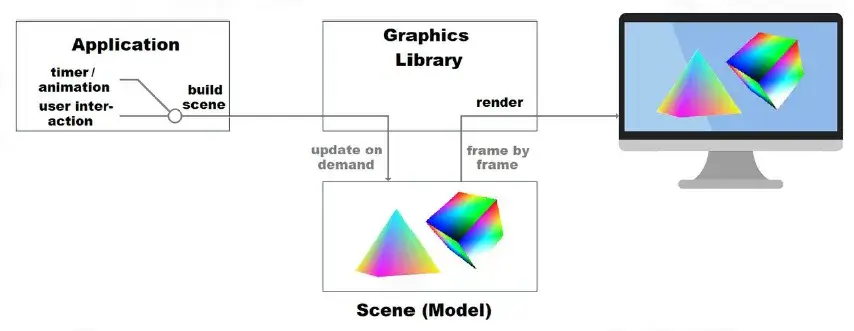
-
The graphics library, instead of the client retains the scene to be rendered.
图形库，而不是客户端保留要渲染的场景。
-
The client calls into the graphics library do notdirectly cause actual rendering, but make useof extensive indirection to resources, managedby the graphics library.
客户端调用图形库不会直接导致实际渲染，而是利用图形库管理的大量间接资源。
HorizontalLayout layout = new HorizontalLayout();
Button button = new Button();
button.setText("Hello!");
button.setwidth(12);
button.setHeight(24);
button.setcallback(&callback_func);
layout.Add(button);{kind=link}
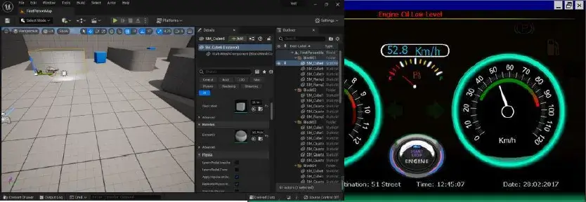
Characteristic
特点
-
Object-oriented
面向对象
-
Widgets contain their own state and data
小部件包含自己的状态和数据
-
Draw widgets as needed
根据需要绘制小部件
-
Complicated effects (animation et.al.)
复杂效果（动画等）
-
Pros
优点
-
High scalability
高可扩展性
-
High performance
高性能
-
High maintainability
高可维护性
Cons
缺点
-
Complex for developers
对开发人员来说很复杂
-
Message queue / callbacks
消息队列 / 回调
-
Synchronization between GUI and application
GUI 和应用程序之间的同步
-
Design Pattern-MVC
{kind=link}
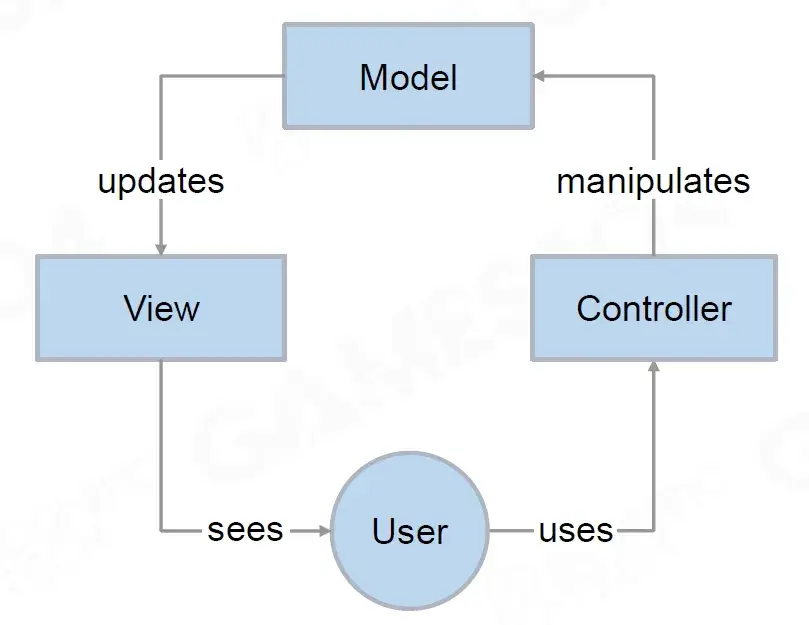
用户借助 Controller 操作 Model，Model 更新 View 给用户看。
Invented by Trygve Reenskaug in 1978, to bridge the gap between the human user's mental model and the digital model that exists in the computer.
由 Trygve Reenskaug 于 1978 年发明，用于弥合人类用户的心理模型与计算机中存在的数字模型之间的差距。
Model: The central component of the pattern, responsible for managing the dataof the application.
模型：模式的核心组件，负责管理应用程序的数据。
View: Any representation of information such as a chart, diagram or table.
视图：任何信息表示形式，例如图表、图解或表格。
Controller: Accepts input and converts it to commands for the model or view.
控制器：接受输入并将其转换为模型或视图的命令。
Design Pattern-MVP
The evolution of the MVC design pattern, wherein the controller is replaced by the presenter.
MVC 设计模式的演变，其中控制器被演示者取代。
{kind=link}
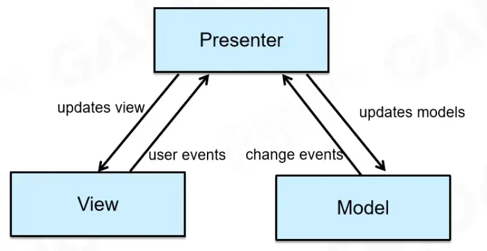
不同于 MVC，这次使用双向箭头。
Model: An interface defining the data to be displayed or otherwise acted upon in the user interface.
模型：定义要在用户界面中显示或以其他方式执行的数据的接口。
View: A passive interface that displays data (the model) and routes user commands (events) to thepresenter to act upon that data.
视图：显示数据（模型）并将用户命令（事件）路由到演示者以对该数据执行操作的被动接口。
Presenter: Acts upon the model and the view. lt retrieves data from repositories (the model), andformats it for display in the view.
演示者：对模型和视图执行操作。它从存储库（模型）检索数据，并将其格式化以在视图中显示。
Design Pattern-MVVM
A variation of Model / View / Controller (MVC)
{kind=link}
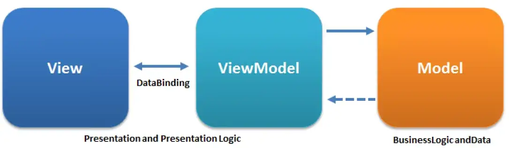
In MVVM,View is the responsibility of a designer rather than a classic developer.
在 MVVM 中，View 是设计师而非传统开发人员的职责。
The designer is generally a more graphical,artistic focused person, and does lessclassic coding than a traditional developer.
设计师通常更注重图形和艺术，与传统开发人员相比，他们较少进行传统编码。
{kind=link}
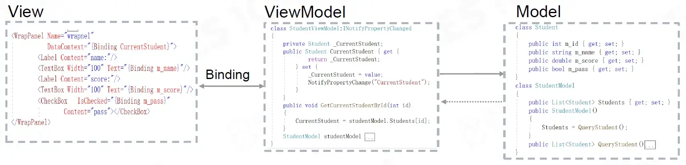
View: using a WYSlWYG tool such as Dreamweaver, VS Blend and save as html/xaml , view state that MVC encodes in its View classes is not easy to represent.
View：使用 Dreamweaver、VS Blend 等所见即所得工具并保存为 html/xaml，MVC 在其 View 类中编码的视图状态不易表示。
Binding: bind View Data to the Model ,no more code in View classes.
Binding：将 View 数据绑定到 Model，View 类中不再有代码。
ViewModel-Model of View: The Model is very likely to have a data types that cannot be mapped directly to controls,ViewMlodel contains data-transformers that convert Model types into View types.
ViewModel-View 的模型：Model 很可能具有无法直接映射到控件的数据类型，ViewMlodel 包含将 Model 类型转换为 View 类型的数据转换器。
Pros
优点
-
Independent development
独立开发
-
Easy to maintain and test
易于维护和测试
-
Easy to reuse components
易于重用组件
Cons
缺点
-
For simple UI, MVVM can be overkill
对于简单的 UI，MVVM 可能有点过头了
-
Data-binding is declarative and harder to debug
数据绑定是声明性的，更难调试
Serialization and Deserialization
序列化与反序列化
{kind=link}
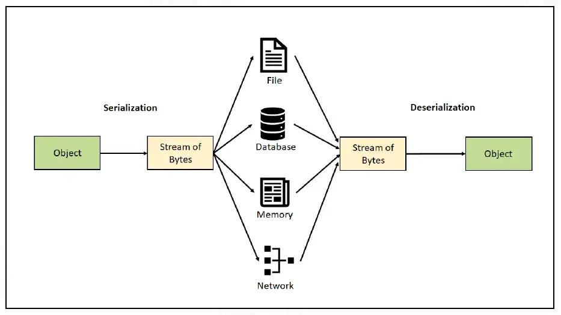
Serialization is the process of translating a data structure or object state into a format that can be stored (for example, in a file ormemory data buffer) or transmitted (for example, over a computer network) and reconstructed later.
序列化是将数据结构或对象状态转换为可存储（例如，在文件或内存数据缓冲区中）或传输（例如，通过计算机网络）并在稍后重建的格式的过程。
Deserialization is the opposite operation,extracting a data structure from a series ofbytes.
反序列化是相反的操作，从一系列字节中提取数据结构。
Text Files
{kind=link}
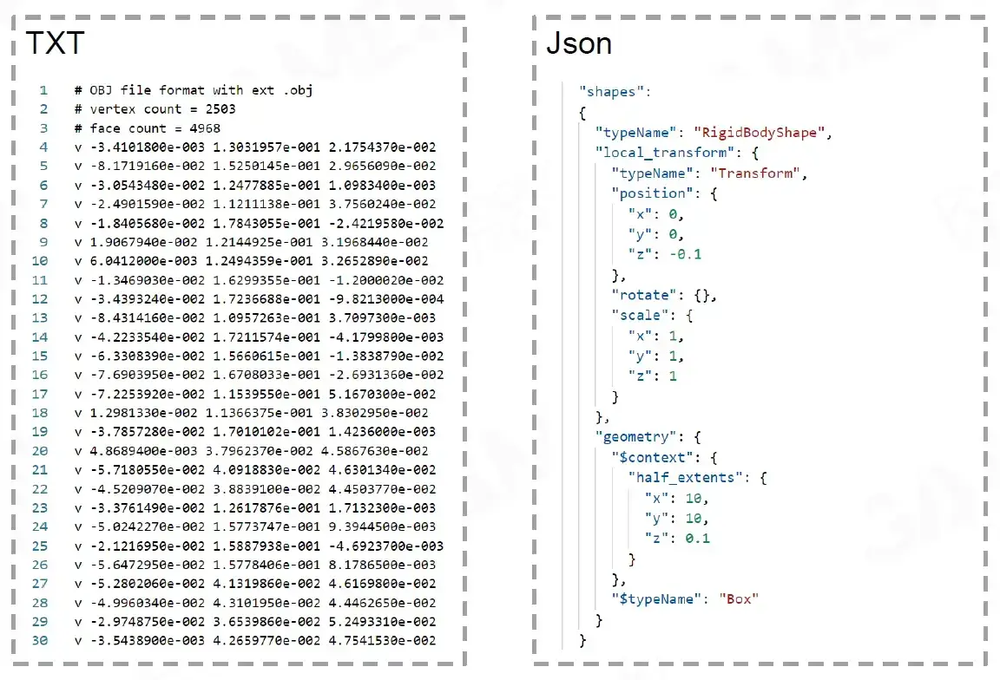
使用文本文档设计的对象数据结构。
- Save data as text files
- Example: TXT, Json, YAML, XML...
- Can read by common text editors
Engine applications:
- Unity Editor(optional): subset of YAML
- Piccolo: Json
- Cryengine: XML/Json (optional)
Binary Files
{kind=link}
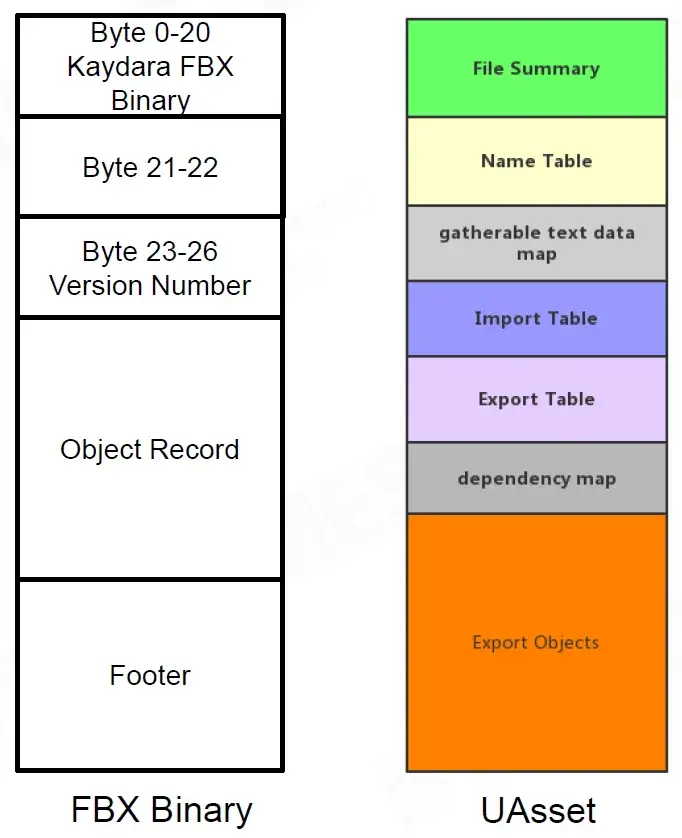
-
Save data as bytes stream
将数据保存为字节流
-
Need additional tools for read/write
需要额外的读/写工具
-
Example: UAsset, FBX Binary
示例：UAsset、FBX 二进制
Engine applications:
- Unity Runtime, Unity Editor (optional 可选)
- CryEngine (optional 可选)
- Unreal: UAsset
Storage Comparison -Text vs. Binary
存储比较 - 文本与二进制
{kind=link}
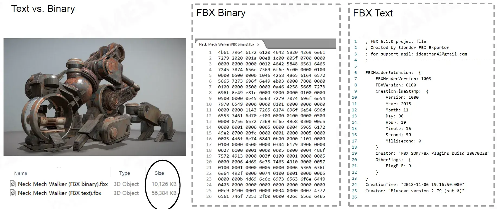
文本可读性好但是占用空间大，读取速度慢。二进制体积小，性能好但是可读性差，不便于调试。
Asset Data Repeatance
资源数据重复
{kind=link}
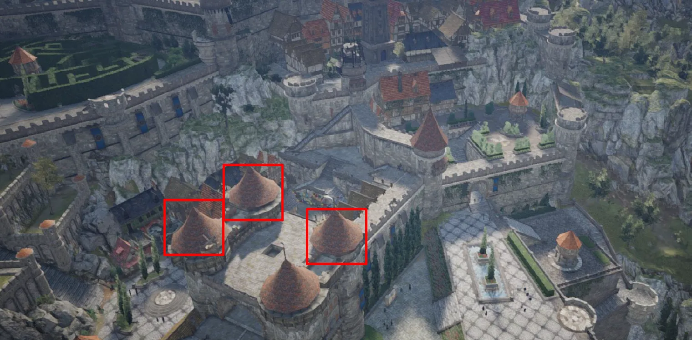
Meshes which in the red boxes are redundant data.
红框内的网格是冗余数据。
How do game developers solve the problem?
游戏开发者如何解决这个问题？
Asset Reference
资产引用
{kind=link}
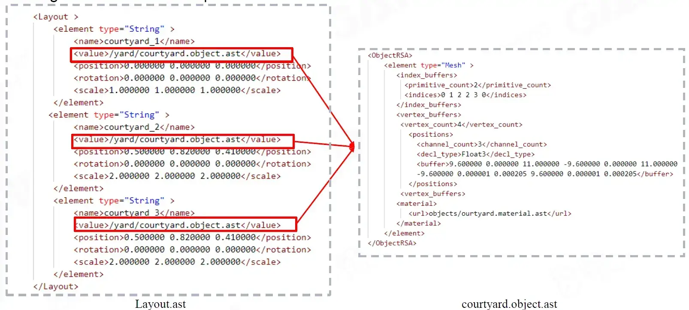
Assets Reference is a way to separate redundant data into asset files and complete association by establishing reference relationships.
资产引用是一种将冗余数据分离到资产文件中，通过建立引用关系完成关联的方式。
Object instance in Scene
场景中的对象实例
{kind=link}
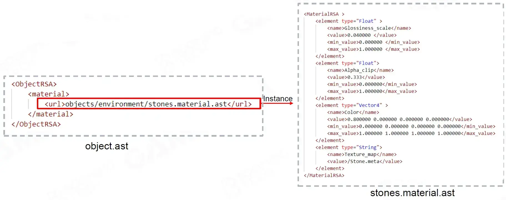
Data instance is a way to create a parent data that you can use as a base to make a wide variety of different children and can also be used directly.
数据实例是一种创建父数据的方法，您可以将其用作基础来制作各种不同的子数据，也可以直接使用。
Object instance Variance
对象实例变化
{kind=link}
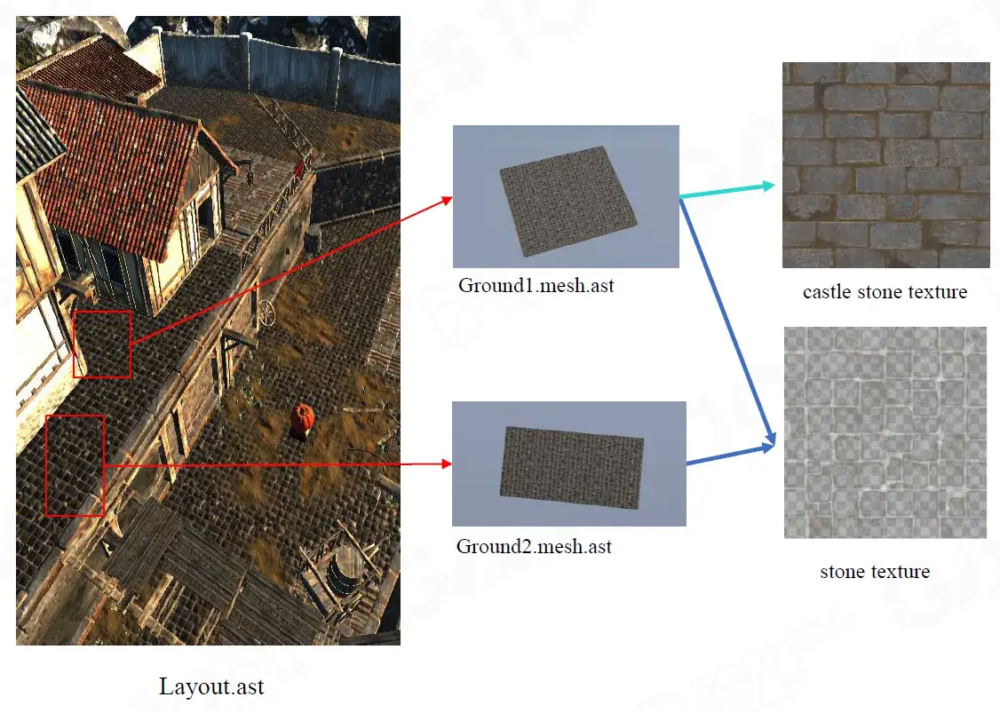
How to change the texture of Ground1 from stone to castle stone?
如何将 Ground1 的纹理从石头更改为城堡石头？
Build Variance by Copying
通过复制构建差异
{kind=link}
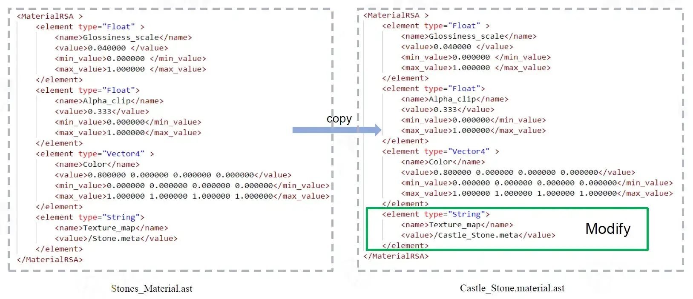
Intuitive way: make a copy of instance data, modify the copy
直观的方式：复制实例数据，修改副本
-
add lots of reduntant data
添加大量冗余数据
Build Variance by Data Inheritance
通过数据继承构建差异
{kind=link}
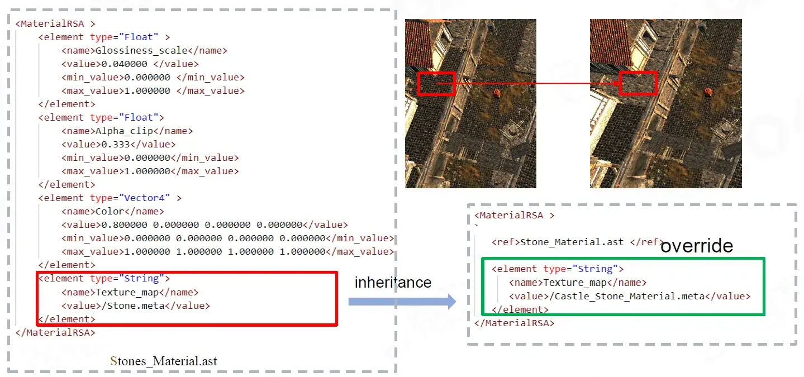
Data lnheritance: lnherit the data of the inherited object and allow overriding assignments to thedata defined in its data structure.
数据继承：继承继承对象的数据并允许覆盖其数据结构中定义的数据的分配。
How to Load Asset-Deserialization
如何加载资产反序列化
Parse Asset File
解析资产文件
{kind=link}
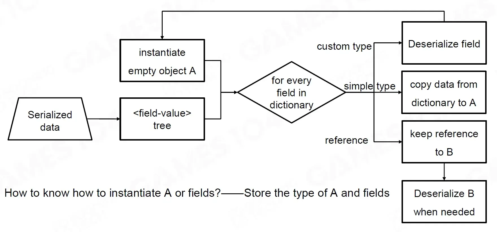
How to know how to instantiate A or fields?——Store the type of A and fields
如何知道实例化 A 或字段？——存储 A 和字段的类型
Build Key-Type-Value Pair Tree
构建键-类型-值对树
{kind=link}
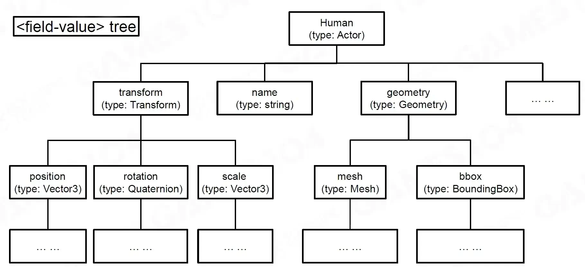
Binary vs. Text
二进制与文本
{kind=link}
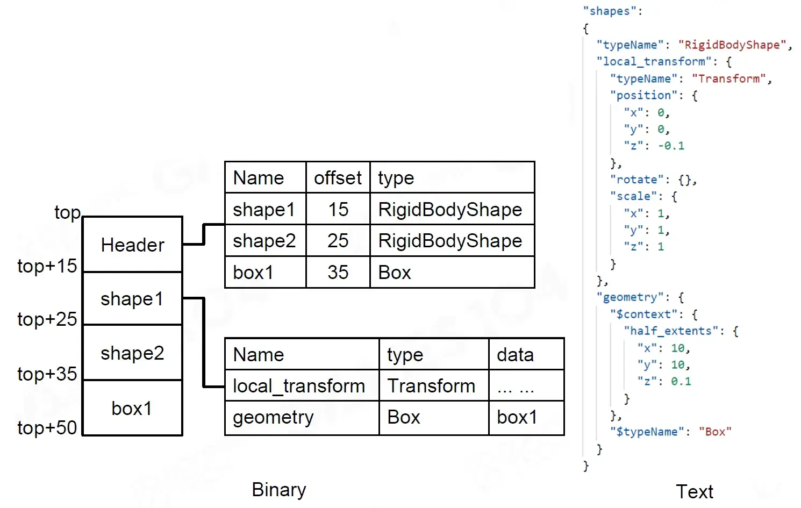
Where to store the objects and fields type?
将对象和字段类型存储在哪里？
-
Text: store in asset
文本：存储在资产中
-
Binary: store in a table
二进制：存储在表中
Endianness
不同的硬件架构有不同的字节序。
{kind=link}
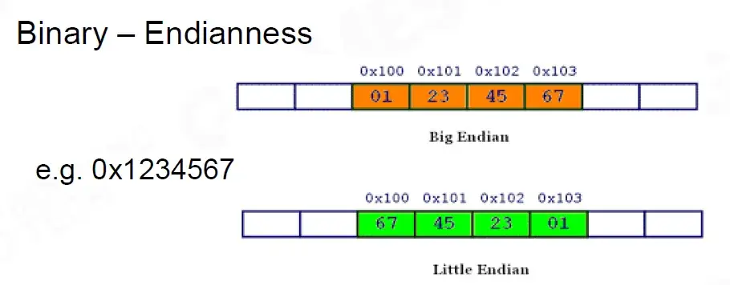
Big Endian: begin with most significant byte end with least significant byte
大端序：以最高有效字节开始，以最低有效字节结束
Little Endian: begin with least significant byte end with most significant byte
小端序：以最低有效字节开始，以最高有效字节结束
Endianness vary among different processors
不同处理器的字节序各不相同
| Processor | Endianness |
|---|---|
| PowerPC (PPC) | Big Endian |
| Sun Sparc | Big Endian |
| IBM S/390 | Big Endian |
| Inel x86 (32 bit) | Little Endian |
| Intel x86_64 (64 bit) | Little Endian |
| ARM | Bi (Big / Little) Endian |
Unreal:
/**
Returns true if data larger than 1 byte shouldbe swapped to deal with endian mismatches.
如果应交换大于 1 字节的数据来处理字节序不匹配问题，则返回 true。
*/
FORCEINLINE bool IsByteSwapping()
{
#if PLATFORM LITTLE ENDIAN
bool SwapBytes = ArForceByteSwapping;
#else
bool SwapBytes = this->IsPersistent();
#endif
return SwapBytes;
}Asset Version Compatibility
资源版本兼容性
{kind=link}
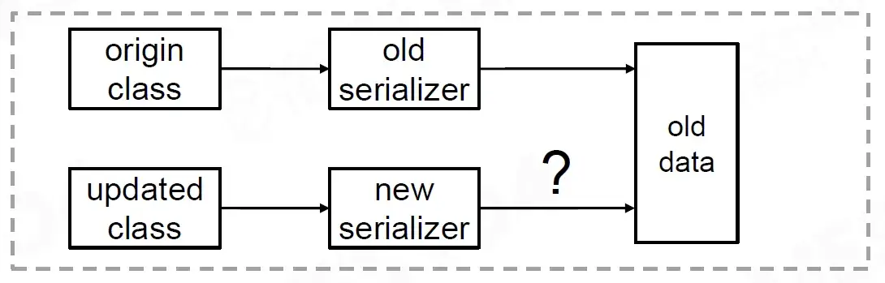
Add or Remove Field
添加或删除字段
origin class:
class GameObject
{
private:
GUID guid;
string name;
Transform transform;
}old data:
{
"guid": "092xtwg2u4ik1359",
"name":"Alice",
"transform": {
"position": {
"x": 0,
"y": 0,
"Z": -0.1
}
"rotate": {},
"scale": {
"x": 1,
"y": 1,
"z": 1
}
}
}updated class 1
class Gameobject
{
private:
GUID guid;
string name;
}updated class 2
class Gameobject {
private:
GUID guid;
string name;
Transform transform;
BoundingBox bbox;
}Solve Compatibility by Version Hardcode
通过版本硬编码解决兼容性问题
Unreal: add version to asset
Unreal：将版本添加到资产
-
Load asset: check if field exists then load data
加载资产：检查字段是否存在，然后加载数据
-
Save asset: write all data to asset file
保存资产：将所有数据写入资产文件
class Gameobject:
int x = default;
float y= default;
bool z= default; // new field
function Deserialize(data):
x = data.GetValue<int>("x");
y = data.GetValue<float>("y");
if(GetCurrentVersion() >= data.version){
z= data.GetValue<bool>("z");
}
function Serialize(data):
data.SetValue<int>("x", x);
data.setValue<float>("y", y);
data.SetValue<bool>("z" z);
data.UpdateVersion(GetcurrentVersion());Solve Compatibility by Field UID
通过字段 UID 解决兼容性问题
Google protocol buffers:
Google 协议缓冲区：
unique number for field
字段的唯一编号
-
Every field has a unique number, never change the number.
每个字段都有一个唯一编号，永远不要更改该编号。
-
Serialization:
序列化：
-
For every field, generate a “key” (fixed size) according toits field number and type.
对于每个字段，根据其字段编号和类型生成一个“键”（固定大小）。
-
Store field data with key, key is stored in the first few bytes
使用键存储字段数据，键存储在前几个字节中
-
-
Deserialization:
反序列化：
-
Field not in schema but in data:key would not be recognized, skip the field.
字段不在架构中但在数据中：键将无法识别，跳过该字段。
-
Field in schema but not in data: set default value.
字段在架构中但不在数据中：设置默认值。
-
message PrefabobjectBinary{
string guid = 1;
string_file_name = 2;
repeated string_game_object_guid_list = 3;
}{kind=link}
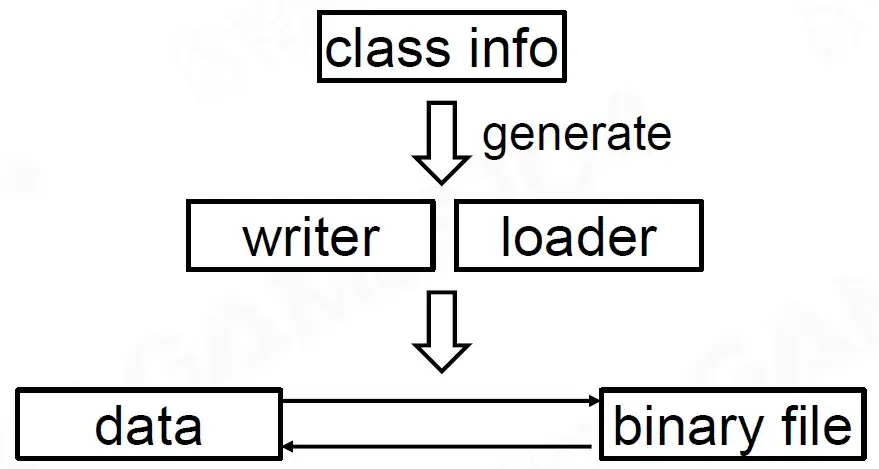
How to Make a Robust Tools
如何制作一个鲁棒的游戏引擎？
-
Undo & Redo
要有 Ctrl + Z 和 Ctrl + Y 的功能
-
Crash Recovery
程序崩溃时能够回档
Command
{kind=link}
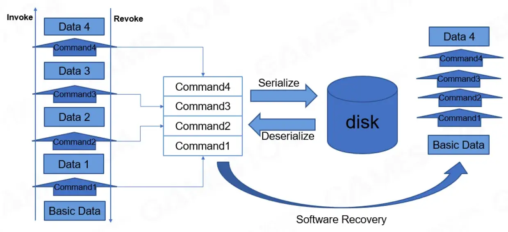
-
Abstract all user operations to atomic commands which can invoke, revoke and serialize, deserialize.
将所有用户操作抽象为可以调用、撤销、序列化、反序列化的原子命令。
Command-Definition
-
ICommand<TData> provide a basic abstraction of the command.
ICommand<TData> 提供命令的基本抽象。
-
Every system (which want to support undo/redo/crash recory ...) needs to implement the system related commands inherantanced from lCommand<TData>.
每个系统（想要支持撤消/重做/崩溃恢复...）都需要实现从 lCommand<TData> 继承的系统相关命令。
public interfaceICommand<TData>
{
long UID { get; set; }
TData Data { get; set;}
void Invoke();
void Revoke();
byte[] Serialize();
void Deserialize(byte[] data);
}Command-UID
Commands need strictly follow the sequence when recovery from disk
从磁盘恢复时命令需要严格遵循顺序
-
Monotonic increase over time
随时间单调增加
-
Unique identification
唯一标识
Command Serialize and Deserialize
命令序列化和反序列化
-
Provide functions to serialize command instance to data and deserialize data to command instance.
提供将命令实例序列化为数据和将数据反序列化为命令实例的函数。
-
TData type needs to provide serialize anddeserialize interface.
TData 类型需要提供序列化和反序列化接口。
Three key Commands
三个关键命令
-
Add
-
Data: Usually data is a copy of the runtime instance
通常数据是运行时实例的副本
-
Invoke: Create a runtime instance with data
使用数据创建运行时实例
-
Revoke: Delete the runtime instance
删除运行时实例
-
-
Delete
-
Data: Usually data is a copy of the runtime instance
通常数据是运行时实例的副本
-
Invoke: Delete the runtime instance
删除运行时实例
-
Revoke: Create a runtime instance with data
使用数据创建运行时实例
-
-
Update
-
Data: Usually data is the old and new values of the modified properties of the runtime instance andtheir property names
通常数据是运行时实例修改属性的新旧值及其属性名称
-
Invoke: Set the runtime instance property to the new value
将运行时实例属性设置为新值
-
Revoke: Set the runtime instance property to the old value
将运行时实例属性设置为旧值
-
How to Make Tool Chain
Various Tools for Different Users
{kind=link}
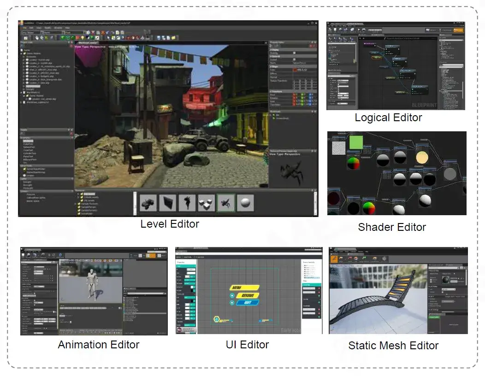
-
Different viewes for different tools
不同工具有不同的视图
-
Each tool has it's owner datastructure
每个工具都有其所有者数据结构
-
Same data may have different view for different user
同一数据可能对不同用户有不同的视图
Develop all Tools Seperately?
单独开发所有工具？
Simplest Way
最简单的方法
-
No Scalability
没有可扩展性
-
No maintainbility
没有可维护性
Find Common Building Blocks
寻找共同的构建块
{kind=link}
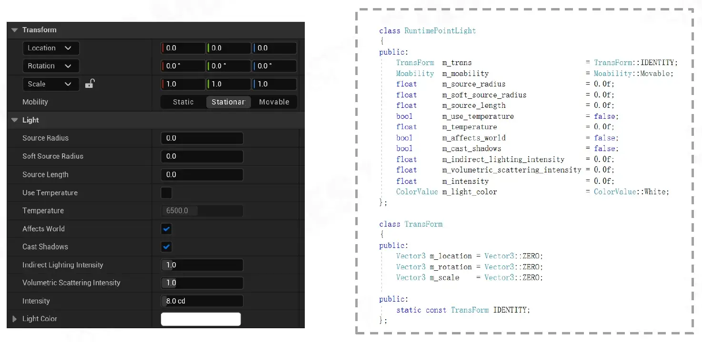
Any complex structure is made up of simple structures, we just need a standard language to describe it.
任何复杂的结构都是由简单的结构组成的，我们只需要一种标准的语言来描述它。
Schema-A Description Structure
Schema-A 描述结构
{kind=link}
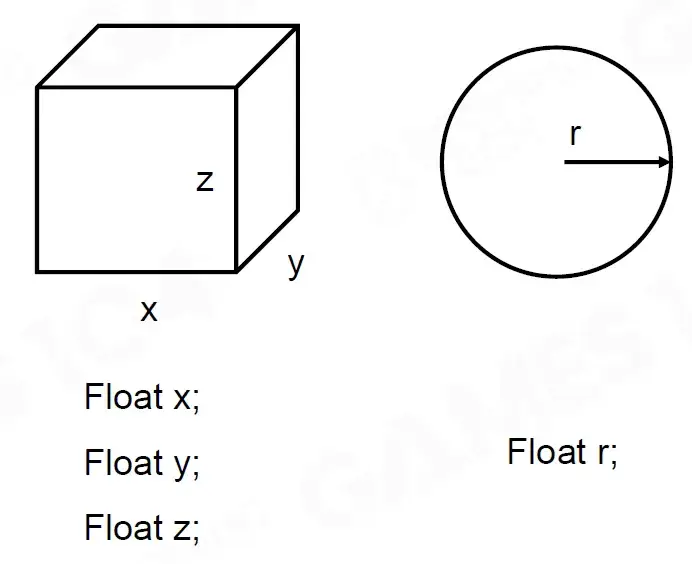
A data schema is the formal description of the structures your system is working with.
数据模式是系统正在使用的结构的正式描述。
Standardizing the world description language
标准化世界描述语言
-
Unified the data processor
统一数据处理器
-
Normalized data between different tools
不同工具之间的标准化数据
-
Ability to automatically generate standardized Ul
能够自动生成标准化 UI
Schema-Basic Eements
Schema-基本元素
{kind=link}
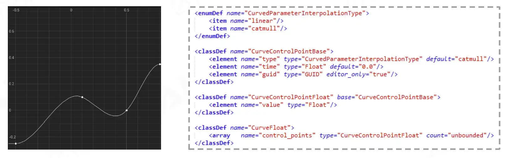
Abstraction of the basic building block of the world
世界基本构成块的抽象
-
Atomic Types: Int, Float, Double ...
原子类型：Int、Float、Double...
-
Class Type: Use atomic types to present complex data structure
类类型：使用原子类型呈现复杂的数据结构
-
Containers: Array, Map
容器：Array、Map
Schema-Inheritance
Abstraction of the inheritance relationship of the world
世界继承关系的抽象
{kind=link}
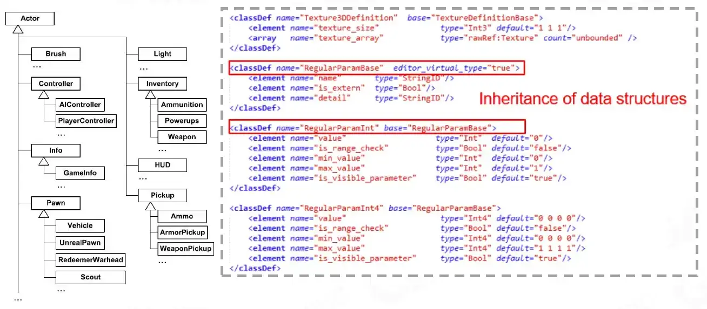
class A {/*...*/};
class B:A {/*...*/};
class C:A {/*...*/};Schema-Data Reference
Abstract of the reference relationship of the world
世界引用关系的抽象
{kind=link}
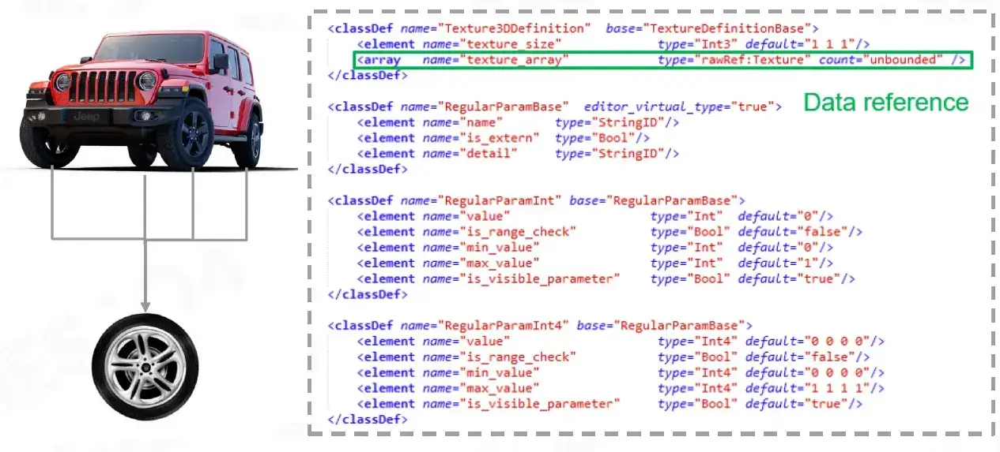
In the code, we need to read the data through the file path and instantiate it into the corresponding file class.
在代码中我们需要通过文件路径读取数据，并实例化成对应的文件类。
Schema - 2 Definition Ways
{kind=link}
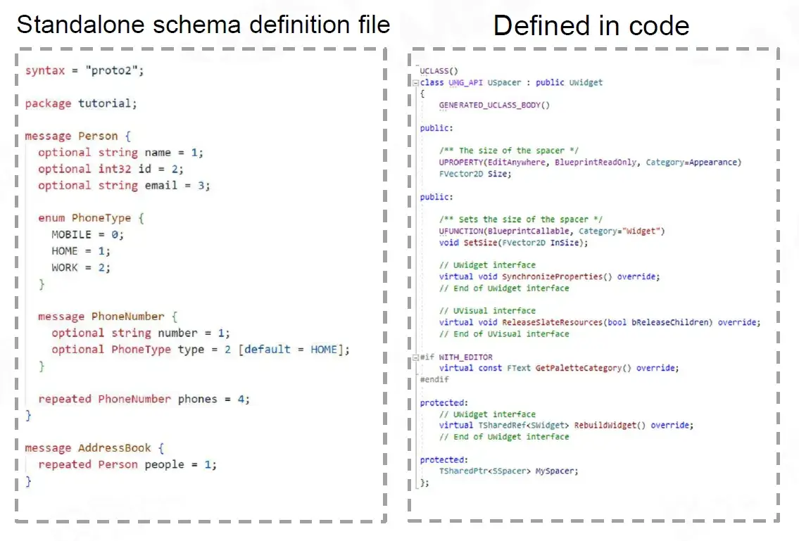
Standalone schema definition file
独立的架构定义文件
Pros
优点
-
Comprehension easily
易于理解
-
Low coupling
低耦合
Cons
缺点
-
Ease to mismatch between engine version and schema version
引擎版本和架构版本容易不匹配
-
Difficult to define function in the structure
难以在结构中定义函数
-
Need to implement complete syntax
需要实现完整的语法
Defined in code
在代码中定义
Pros
优点
-
Ease to accomplish Function reflection
易于实现函数反射
-
Natural support for inheritance relationships
自然支持继承关系
Cons
缺点
-
Difficult to understand
难以理解
-
High coupling
高耦合
Three Views For Engine Data
{kind=link}
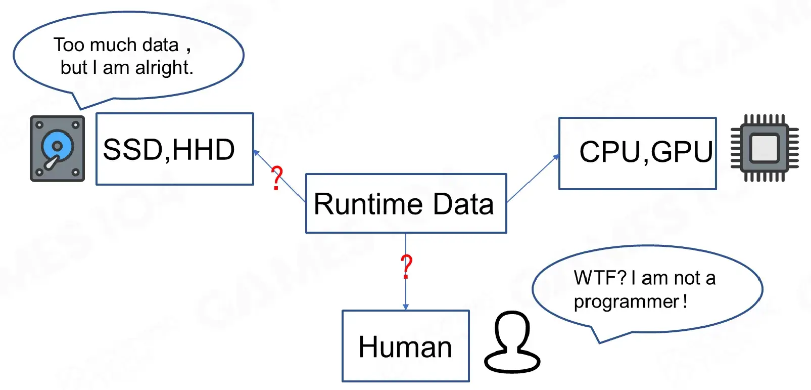
数据以三个形式存在：存储器中、运算器中，还要便于用户理解。
Runtime View
运行时视图
Focus:
重点：
-
Read at a faster speed
以更快的速度阅读
-
Calculate at a faster speed
以更快的速度计算
class RuntimeSpotlight
{
public:
// Spot Light Translation Matrix
Matrix4x4 light trans {Matrix4x4::IDENTITY};
// Spot Light Cone
float inner_cone_radian = 0.0f;
float outer_cone radian = 0.0f;
// Spot Light intensity and units
float intensity = 0.0f;
LightUnits unit= CANDELA;
// Spot Light Color
Vector4 light color {Vector4::ZERO};
// other light data like shadow...
}Storage View
Focus:
重点：
-
Write at a faster speed
写入速度更快
-
Occupies less hard disk space
占用更少的硬盘空间
"Position:X": 1.0,
"Position:Y": 1.0,
"Position:Z": 1.0
"Rotation:X": 0.0,
"Rotation:Y": 0.0,
"Rotation:Z": 0.0,
"Rotation:W" : 1.0,
"Scale:X": 1.0,
"Scale:Y": 1.0,
"Scale:Z": 1.0,
// cone degree
"inner cone_degree": 30,
"outer cone_degree": 60,
//sds
"intensity": 0.0,
"unit": 1
//other data..Tools View
{kind=link}
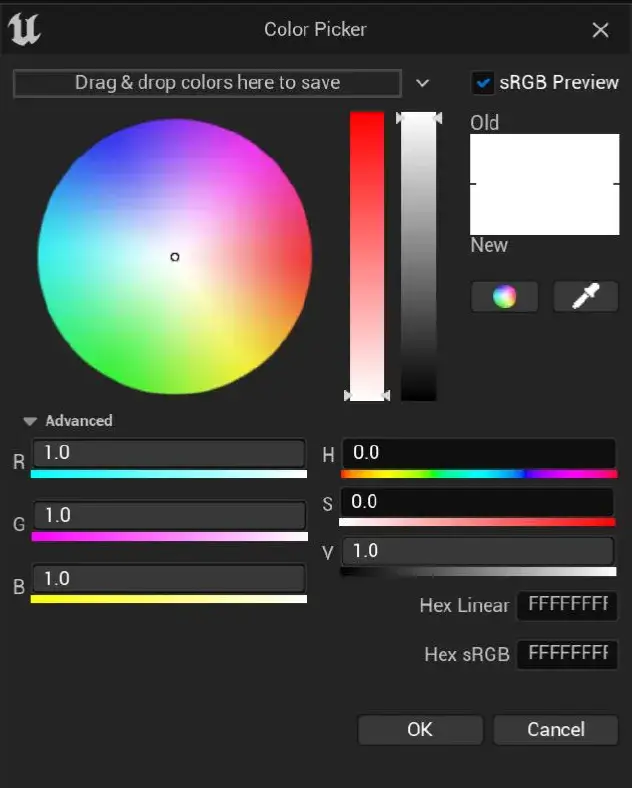
Focus:
重点：
-
More understandable form
更易理解的形式
-
The need for multiple editing modes
需要多种编辑模式
Other Point:
其他点：
Tool data does not generally exists. Usually, special processing is done when the UI interface is generated
工具数据一般不存在，通常在生成 UI 界面时进行特殊处理
Tools View - Understandable
{kind=link}
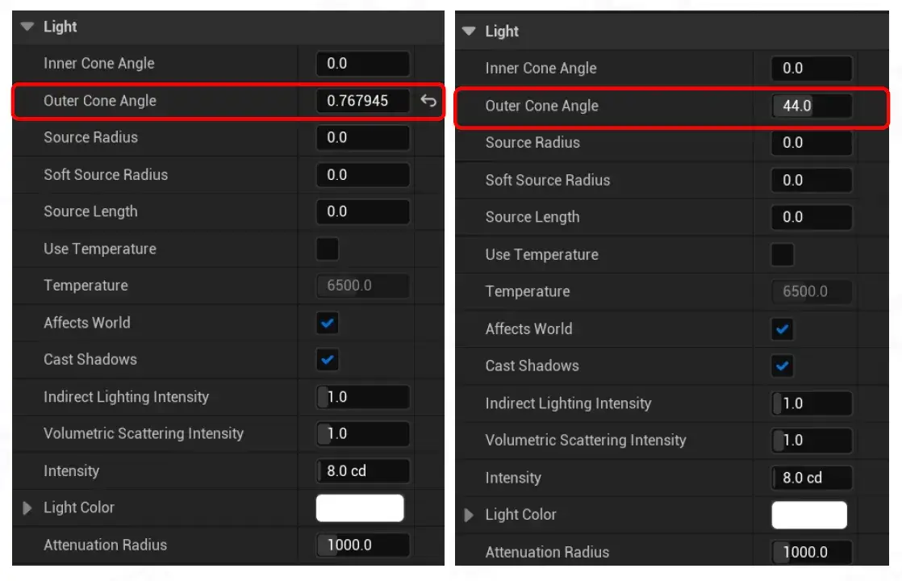
比如，计算中使用弧度，但给用户一般使用角度。
Too View-Various Editor Nodes
Too View-各种编辑器节点
{kind=link}
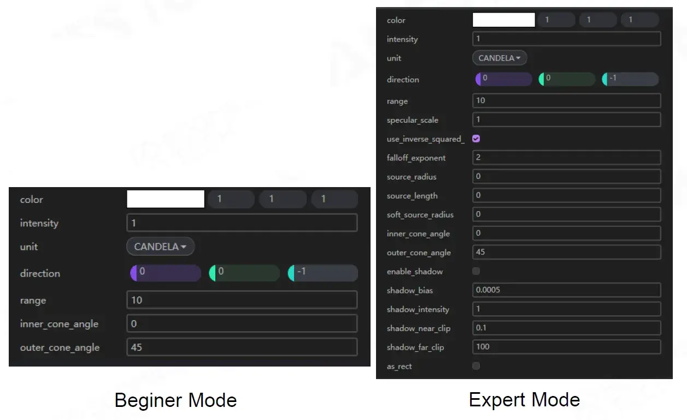
Different edit mode for groups with different needs
针对不同需求的群体提供不同的编辑模式
What You See is What You Get (WYSIWYG)
所见即所得
User Friendly for Artists
User Friendly for Designer
Stand-alone Tools
{kind=link}
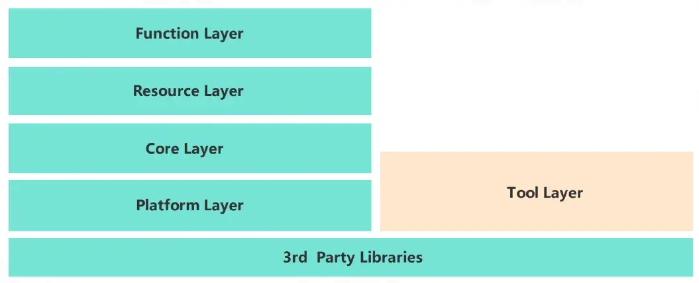
Stand-alone Tools is a kind of tool that canrun independently of the engine.
独立工具是一种可以独立于引擎运行的工具。将 Tool Layer 与其他层并列。
Pros
优点
-
Suitable for use as a DCC tool plug-in
适合用作 DCC 工具插件
-
Easy to start developing tools
易于上手开发工具
Cons
缺点
-
Difficult to achieve WYSIWYG
难以实现所见即所得
In Game Tools
{kind=link}
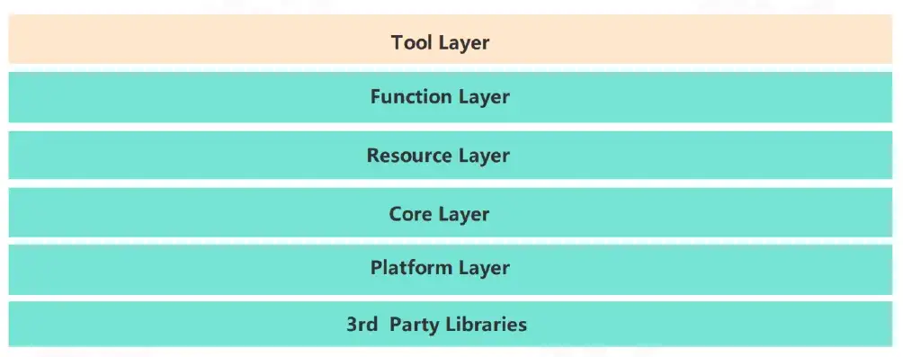
In Game Tools is a kind of tool based on engineruntime system work.
游戏内工具 是一种基于引擎运行时系统工作的工具。将 Tool Layer 置于顶层。
Pros
优点
-
Access to all engine data directly
直接访问所有引擎数据
-
Easy to preview the game in the editor
易于在编辑器中预览游戏
-
Easy to make live in-game editing
易于进行实时游戏内编辑
Cons
缺点
-
Complex engine architecture
引擎架构复杂
-
Requires a complete engine Ul system to makethe editor Ul
需要完整的引擎 UI 系统才能制作编辑器 UI
-
When the engine is crashing, the tools become unusable as well
当引擎崩溃时，工具也会变得无法使用
In Game Tools-Editor Mode
游戏工具-编辑器模式
{kind=link}
Editor Mode: Support to modify and preview scene data
编辑器模式：支持修改和预览场景数据（如 Unity 在运行时调试）
-
Real time preview of scene data modification
实时预览场景数据修改
-
Logic systems do not tick, so there are more hardware resources to display more scene details
逻辑系统不勾选，因此有更多的硬件资源来显示更多的场景细节
-
...
Play in Editor (PIE)
在编辑器中玩游戏 (PIE)
PIE: Directly play game in editor, no need to close editor and start game mode
PIE：直接在编辑器中玩游戏，无需关闭编辑器并启动游戏模式
-
Save loading time
节省加载时间
-
The continuity of creation is maintained
保持创作的连续性
-
Quickly test modifications
快速测试修改
-
...
Two implemation ways
两种实现方式
-
Play in editor world: Start gameplay systems tick in editor world and play in it
在编辑器世界中玩游戏：在编辑器世界中启动游戏系统并在其中玩游戏
-
Play in PIE world: Duplicate editor world to create a PlE world and play in it
在 PIE 世界中玩游戏：复制编辑器世界以创建 PlE 世界并在其中玩游戏
PIE Mode -Play in Editor World
PIE 模式 - 在编辑器世界中游戏
{kind=link}
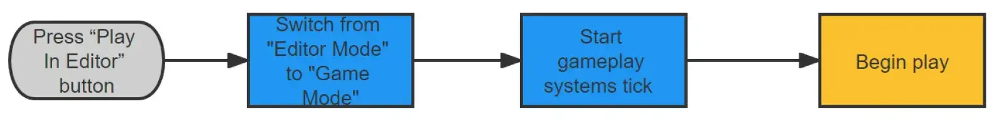
Pros
优点
-
Easy architecture tools layer
简单的架构工具层
-
Quick state change
快速状态更改
Cons
缺点
-
Game mode may cause data changes
游戏模式可能导致数据更改
Example
示例
- Piccolo
PIE Mode -Play in PIE World
PIE 模式 - 在 PIE 世界中游戏
{kind=link}
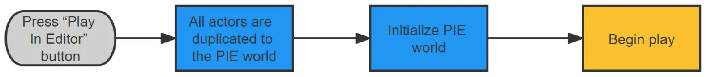
Pros
优点
-
Data separation
数据分离
-
Easy to instantiate multiple game instances Cons
易于实例化多个游戏实例
Cons
缺点
-
Architecture complex
架构复杂
Example
- Unreal
One More Thing - Plugin
还有一件事 - 插件
游戏引擎开发者不可能顾虑到所有可能的游戏开发情况，允许插件扩展游戏引擎的功能。
Extensibility
可扩展性
Different games need different customization of engine tools.
不同的游戏需要对引擎工具进行不同的定制。
Engine tools use plug-in mechanism to satisfy the needs.
引擎工具使用插件机制来满足需求。
Plug-in-Showcases
{kind=link}
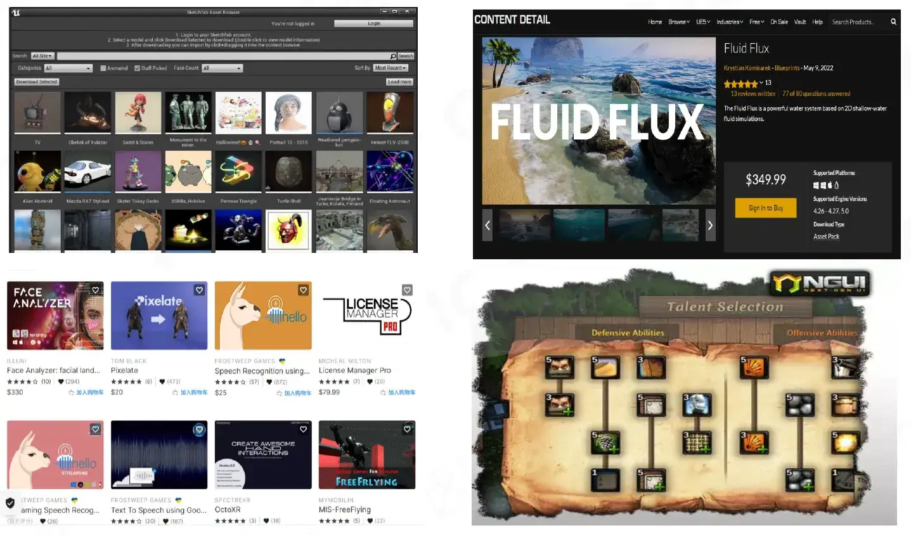
Plug-in - Framework
{kind=link}
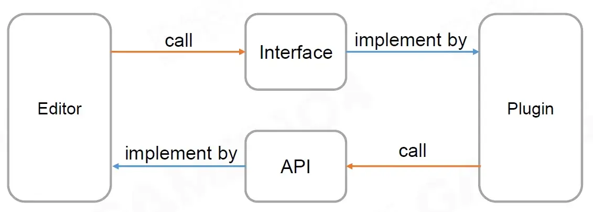
Plug-in : A software component that adds a specific feature to an existing computer program.
插件：为现有计算机程序添加特定功能的软件组件。
PluginManager: Manage plugin loading and unloading.
PluginManager：管理插件的加载和卸载。
Interface: A series of abstract classes provided to plug-ins, plug-ins can choose to instantiate different classes to realize the development of corresponding functions.
Interface：提供给插件的一系列抽象类，插件可以选择实例化不同的类来实现相应功能的开发。
API: A series of functions exposed by the engine, plug-ins can use functions to execute the logic what we want.
API：引擎暴露出来的一系列函数，插件可以使用这些函数来执行我们想要的逻辑。
Plug-in-Add a Toolbar Button
插件-添加工具栏按钮
{kind=link}
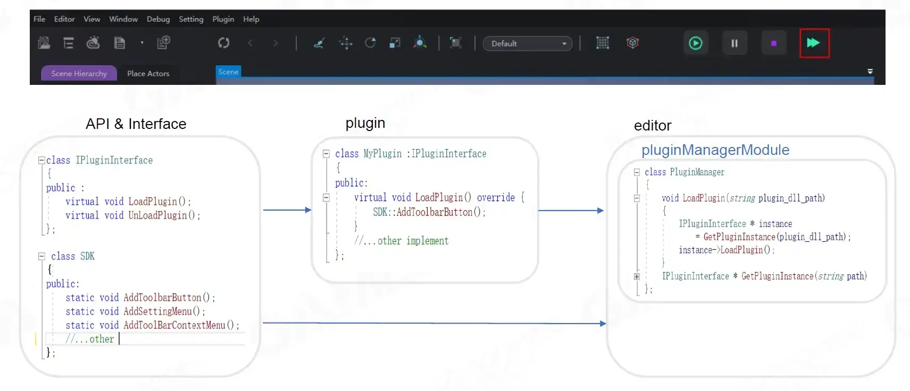
Plug-in -Add a Plug-in Menu in Unreal5
{kind=link}
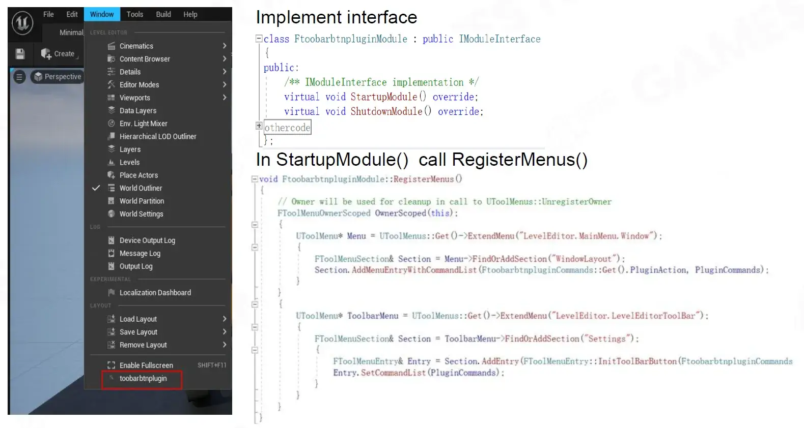
Plug-in-Summary
插件概述
{kind=link}
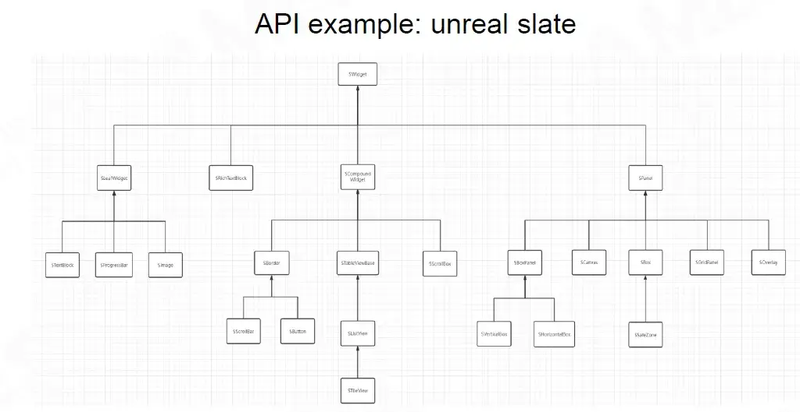
The meaning of plug-in framework
插件框架的意义
-
Extend editor functionality
扩展编辑器功能
-
Ease to hot update as decoupling
解耦，方便热更新
-
Facilitate the construction of engine development ecology
方便引擎开发生态的构建
Plug-in framework requirements
插件框架要求
-
Full API support
完整的 API 支持
-
Common interface support
通用接口支持
References
参考文献
-
Tools Tutorial Day: A Tale of Three Data Schemas, Ludovic Chabant, GDC2018:https://media.contentapi.ea.com/content/dam/eacom/frostbite/files/gdc18-tools-tutorial-day-a-tale-ofthree-data-schemas.pptx
-
Creating a Tools Pipeline for 'Horizon: Zero Dawn', Dan Sumaili, Sander van der Steen, GDC 2017.https://www.guerrilla-games.com/media/News/Files/GDc2017_Sumaili_VanDerSteen_CreatingAToolsPipelineForHorizonZeroDawn.pdf
-
Unreal Engine UProperties: https://docs.unrealengine.com/5.0/en-US/unreal-engine-upropertiesCommand
-
Pattern: https://www.tutorialspoint.com/design_pattern/command_pattern.htm
-
Unreal Plugins: https://docs.unrealengine.com/4.27/en-US/ProductionPipelines/Plugins
-
Model-view-controller: https://en.wikipedia.org/wiki/Model%E2%80%93view%E2%80%93controller
-
Trygve Reenskaug: https://en.wikipedia.org/wiki/Trygve_Reenskaug
-
MVC: https://folk.universitetetioslo.no/trygver/themes/mvc/mvc-index.html
-
Benefits and Drawbacks of MVC Architecture: https://shreysharma.com/benefits-and-drawbacks-of-mvc-architecture/
-
Model-view-presenter: https://en.wikipedia.org/wiki/Model%E2%80%93view%E2%80%93presenter
-
Model-view-viewmodel: https://en.wikipedia.org/wiki/Model%E2%80%93view%E2%80%93viewmodel
第十四节：引擎工具链高级概念与应用
Glance of Game Production
游戏制作概览
whether to work on the environment, the animation, to place characters or to create missions.
是在环境，动画中工作，放置角色还是创建任务
Adapt to Different Game Genres
适应不同的游戏类型
{kind=link}
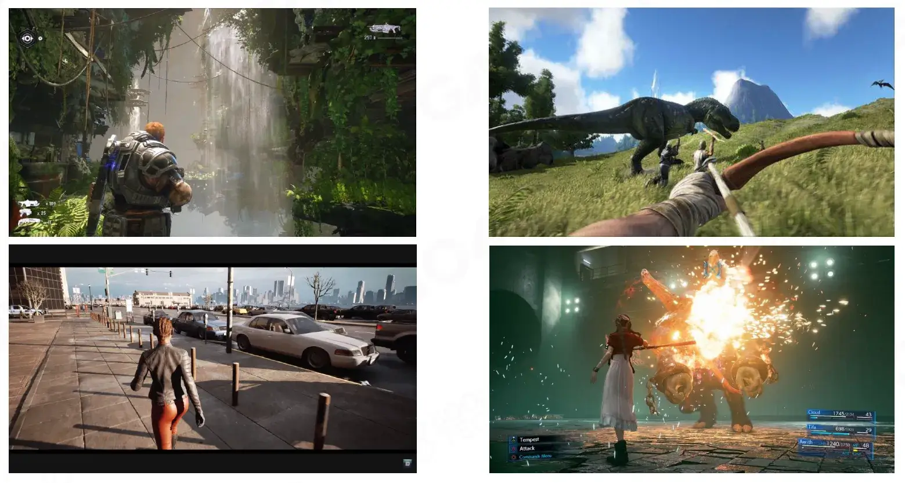
Challenges from Real Production
真实游戏开发中的挑战。
{kind=link}
在游戏开发中：
-
Massive various data from DCC and engine tools
大量来自 DCC 和发动机工具的各种数据
-
Artist, designer and programmer with different mindsets
艺术家，设计师和具有不同心态的程序员
-
WYSIWYG is must for highquality production
所见即所得，必须高质量生产
World Editor-A hub for everything to build the world
世界编辑 - A Hub供所有建立世界的枢纽
{kind=link}
Unreal 为游戏开发者提供的界面。
Editor Viewport: A Special Version of Game Engine
编辑器视口：游戏引擎的特殊版本
-
Main window of interaction between designers and game world
设计师与游戏世界之间的互动主窗口（便于设计师 Debug 用的互动窗口）
-
Powered by a full game engine in special "editor” mode
由特殊“编辑”模式的完整游戏引擎提供动力
-
Provides a variety of special gadgets and visualizers for editing
提供各种用于编辑的特殊小工具和可视化器
WARNING: Editor-only code must be moved out of released game!
警告：仅编辑代码必须从发布的游戏中移出！
Everything is an Editable Object
一切都是一个可编辑的对象
{kind=link}
-
The editing requirements of all objects in the editor world are mostly the same, such as moving, adjusting parameters, etc
编辑世界中所有对象的编辑要求大多是相同的，例如移动，调整参数等
Different Views of Objects
对象的不同视图
-
Display all of the objects within the scene
显示场景中的所有对象
-
Organize objects in different views for user conveniences
在不同视图中组织对象的用户便利
{kind=link}
{kind=link}
Schema-Driven Object Property Editing
模式驱动的对象属性编辑
{kind=link}
-
Displays all of the editable properties for the selected objects
显示所选对象的所有可编辑属性
-
Beyond schema, we can define some customized editing utilities for different types
除了模式之外，我们还可以为不同类型的对象定义一些自定义的编辑实用程序
Content Browser
内容浏览器
{kind=link}
-
Provide intuitive thumbnail of all assets
提供所有资产的直观缩略图
-
Share asset among different projects
在不同项目之间共享资产
-
Evolution of asset management from static file folder to content "ocean"
资产管理从静态文件夹演变为内容“海洋”
Editing Utilities in World Editor
世界编辑器中的编辑实用程序
{kind=link}
便于用户编辑游戏对象的图示。
Mouse Picking
鼠标拾取
Ray Casting
射线投射
{kind=link}
Pros:
-
No cache required
无需缓存
-
Can support multiple objects on selected rays
可以支持选定射线上的多个对象
Cons:
-
Poor query performance
查询性能较差
RTT
{kind=link}
Pros:
-
Easy to implement range queries
易于实现范围查询
-
Ability to complete queries quickly
能够快速完成查询
Cons:
-
Need to draw an extra picture
需要绘制额外的图片
-
Obstructed objects cannot be selected
无法选择被遮挡的物体
Object Transform Editing
{kind=link}
游戏引擎要便于用户对 Object 作 Transform Editing。
Terrain
{kind=link}
Landform
地形
-
Height map
高度图
Appearance
外观
-
Texture map
纹理图
Vegetation
植被
-
Tree instances
树木实例
-
Decorator distribution map
装饰器分布图
Height Brush
高度画笔
{kind=link}
-
Draw height map to adjust terrain mesh
绘制高度图以调整地形网格
-
Height change needs to be natural and smooth
高度变化需要自然流畅
-
Can be easily adjusted to the desired results
可以轻松调整到所需效果
-
Customized brush
自定义画笔
-
-
Instance Brush
{kind=link}
实例画笔（给地标种树）
Pros:
-
Instance position is fixed
实例位置固定
-
Available to further modification
可进一步修改
Cons:
-
Large amount of data
数据量大
Environment
环境
{kind=link}
-
Sky
天空
-
Light
灯光
-
Roads
路
-
Rivers
河流
-
...
From up to down, environment around us present a live world to the player. Edit these environment elements would also be important.
从上到下，我们周围的环境为玩家呈现了一个生动的世界。编辑这些环境元素也很重要。
Environment - Rule System
{kind=link}
有了这些规则更好地让用户创建合理的地形环境。
Rules:
规则：
-
Tree will not grow beside objects.
树不会在物体旁边生长。
-
Tree will not grow in water.
树不会在水中生长。
-
Tree will not grow on roads.
树不会在道路上生长。
Conclusion:
结论：
-
Rule system handling data changes.
规则系统处理数据变化。
-
Decoupled Environment systems.
解耦环境系统。
Editor Plugin Architecture
编辑器插件架构
Examples of Plug-in Module in Commercial Softwares
商业软件中的插件模块示例
{kind=link}
A Cross Matrix between Systems and Objects
系统与对象之间的交叉矩阵
{kind=link}
Any system and object type could be plug-ins to Editors
任何系统和对象类型都可以成为编辑器的插件
Combination of Multiple Plugins
多种插件架构
{kind=link}
Covered
覆盖
-
Only execute the newly registered logic, skip the original logic
仅执行新注册的逻辑，跳过原始逻辑
-
Ex. Terrain editing overwrite
例如地形编辑覆盖
{kind=link}
Distributed
分布式
-
Each plugin will be executed, and if there is an output, the results will eventually be merged
每个插件都会被执行，如果有输出，结果最终会被合并
-
Ex. Most special system editing seperately
例如大多数特殊系统都是单独编辑的
{kind=link}
Pipeline
管道
-
Input and output are connected to each other, generally input and output are the same data type
输入和输出相互连接，通常输入和输出是相同的数据类型
-
Ex.Asset preprocessing, geometry for physics
例如资产预处理、物理几何
{kind=link}
Onion rings
洋葱圈
-
On the basis of the pipeline, the core logic of the system is in the middle, and the plug-in pays attention to the logic of entering and exiting at the same time
在管线的基础上，系统的核心逻辑在中间，插件同时关注进入和退出的逻辑
-
Ex. Road editing plugin with terrain plugin
Ex. 道路编辑插件与地形插件
One More Thing-Version Control
还有一件事-版本控制
A certain version relationship is required between the plug-in and the host application to ensure that they can work together normally.
插件和宿主应用之间需要有一定的版本关系，才能保证它们能够正常协同工作。
-
Plug-in use the same version number with the host application
插件使用与宿主应用相同的版本号
-
Plug-in use the version number of the plug-in interface
插件使用插件接口的版本号
-
This is more recommended because the update frequency of the plug-in interface and thesoftware may be different
这是比较推荐的做法，因为插件接口和软件的更新频率可能不一样
-
Design Narrative Tools
设计叙述工具
Storytelling in Game Engine
游戏引擎中的故事叙述
Control many parameters variance in the timeline
控制时间轴中的许多参数变化
{kind=link}
Sequencer
序列发生器（做动画的软件里常有）
{kind=link}
-
Track: ln order to reference actors in your sequence. Any character, prop, camera, effect, or othelactors can be referenced and manipulated in Sequencer
轨道：为了引用序列中的演员。任何角色、道具、摄像机、效果或其他演员都可以在 Sequencer 中引用和操纵
-
Property Track: Property of reference actors in track
属性轨道：轨道中引用演员的属性
-
Timeline: A line describing time in discrete frames
时间轴：描述离散帧中时间的线
-
Key Frame: The key fames can manipulate properties. Upon reaching a key frame in the timeline the track's properties are updated to reflect the values you have defined at that point
关键帧：关键帧可以操纵属性。到达时间轴中的关键帧后，轨道的属性将更新以反映您在该点定义的值
-
Sequence: Sequencer's data
序列：Sequencer 的数据
Sequencer-Bind Objects to Track
序列器-将对象绑定到跟踪
{kind=link}
How to let the sequencer control my “chick”
如何让音序器控制我的“小鸡”
-
Bind the “chick” to Track
将“小鸡”绑定到轨道
Sequencer-Bind Object Property to Property Track
Sequencer-将对象属性绑定到属性轨道
How to control the moving position of the “chick”
如何控制“小鸡”的移动位置
-
Bind position property toproperty track
将位置属性绑定到属性轨道
Sequencer-Set Key Frame
Sequencer-设置关键帧
How to make an “chick” reach a specified position
如何让“小鸡”到达指定位置
Sequencer-Set Key Frames
序列器设置关键帧
A, B, C, D are key frames.
A、B、C、D 是关键帧。
How “chick” go from A to B to C to D
“小鸡”如何从 A 到 B 再到 C 再到 D
{kind=link}
Sequencer-Interpolate Properties along Key Frames
Sequencer-沿关键帧插入属性
Similar to animation, set key frames
与动画类似，设置关键帧
{kind=link}
Reflection and GamePlay
Reflection is Foundation of Sequencer
反射是 Sequencer 的基础
{kind=link}
Any data in game engine can be bind into track based on reflection system
游戏引擎中的任何数据都可以根据反射系统绑定到轨道中
Complexity of Game Play
Visual Scripting System
{kind=link}
可视化编程系统，如蓝图。
Hard Code Method for More Feature
硬编码方法实现更多功能，但是代码也更复杂。
class Human: public object{
void Jump() {
// do something ...
}
void StopJump() {
// do something ...
}
}void CallFunction(object* instance, string type_name, string func_name)
{
if (type_name == "Human") {
Human* human = (Human*)instance;
if (func_name == "Jump") {
human->Jump();
}
else if(func_name == "StopJump"){
human->StopJump();
}
}
}A Common Solution - Reflection
常见解决方案 - 反射
In computer science, reflective programming or reflection is the ability of a process to examine, introspect and modify its own structure and behavior.
在计算机科学中，反射编程或反射是指进程检查、自省和修改自身结构和行为的能力。
现在高级的语言编程都有反射的设计。
JAVA Reflection
package Demo;
public class Test {
public int m_filed;
public void print()
{
System.out.print("call print().");
};
}package Demo;
import java.lang.refelect.Field;
import java.lang.refelect.Method;
public class Demo {
public static void main(String[] args) throws Exception {
Class<?> cls = Class.forName("Demo.test");
Object obj = cls.getConstructor().newInstance();
Field filed_accessor = cls.getField("m_filed");
filed_accessor.set(obj, 2);
Method method_accessor = cls.getMethod("print");
method_accessor.invoke(obj);
}
}Reflection Build the Bridge between Code and Tools
反射在代码和工具之间搭建桥梁
Using reflection to generate a code meta information map
使用反射生成代码元信息图
-
class_name, func_name and para_name
-
generate accessor and invoker
生成访问器和调用器
class Human: public Object {
void Jump() {
// do something ...
}
void StopJump() {
// do something ...
}
}void callFunction(object* instance, string type_name, string func_name)
{
FunctionPtr function_ptr = FunctionInfoMap::getInvokefunction(instance, type_name, func_name);
function ptr->invoke();
}How to Implement Reflection in C++
如何在 C++ 中实现反射
-
Collect type info from code
从代码中收集类型信息
-
Generate code to provide accessors for fields and methods
生成代码以提供字段和方法的访问器
-
Manage all accessors with a <string,accessor> map
使用 <string,accessor> 映射管理所有访问器
How to Get Type Info from Code
如何从代码中获取类型信息
General Programming Language (GPL) Compilation Process
通用编程语言 (GPL) 编译过程
{kind=link}
Abstract Syntax Tree (AST): An abstract representation of the syntax structure of source code. It represents the syntax structure of programming language in the form of a tree, and each node in the tree represents a construct in the source code.
抽象语法树（AST）：源代码语法结构的抽象表示。它以树的形式表示编程语言的语法结构，树中的每个节点代表源代码中的一个构造。
{kind=link}
Why Piccolo Use Clang
{kind=link}
One of Clang's main goals is to provide a library-based architecture, so that the compiler could interoperate with other tools that interact with source code.
Clang 的主要目标之一是提供基于库的架构，以便编译器可以与其他与源代码交互的工具进行互操作。
Generate Schema From AST
从 AST 生成模式
{kind=link}
-
Parsing AST, such as type name, field name, field type, etc
解析 AST，例如类型名称、字段名称、字段类型等
-
Build a temporary schema of data in memory
在内存中构建数据的临时模式
Precise Control of Reflection Scope
精确控制反射作用域
{kind=link}
In the actual scenario, we need to add a lot of tag information to identify the purpose of the type.
实际场景中，我们需要添加很多标签信息来标识类型的用途。
Use Marco to Add Reflection Controls
使用 Marco 添加反射控件
{kind=link}
Add tags by __attribute__
通过 __attribute__ 添加标签
-
__attribute__ is a source code annotation provided by clang. In the code, the required data types can becaptured by using these macros.
__attribute__ 是 clang 提供的源代码注释，在代码中可以通过这些宏来捕获需要的数据类型。
-
Define a "CLASS" macro to distinguish between precompile and compile.
定义一个 “CLASS” 宏来区分预编译和编译。
-
When precompiling, define "__REFOECTION_PARSER__" macro in meta parser to make_the attribute information effective
预编译时，在 meta parser 中定义“__REFOECTION_PARSER__”宏，使属性信息生效
-
Reflection Accessors
反射访问器
{kind=link}
Generate reflection accessors using schemas
使用模式生成反射访问器
-
For classes, we need to generate type info getters
对于类，我们需要生成类型信息获取器
-
For fields, we need to generate setters and getters that can access them
对于字段，我们需要生成可以访问它们的设置器和获取器
-
For functions, we need to generate invoker that can invoke tem
对于函数，我们需要生成可以调用 tem 的调用器
Code Rendering
代码渲染
The same type of business code structure is the same.
同类型的业务代码结构都是一样的。
{kind=link}
Code Rendering
代码渲染
Code Rendering is the process of collecting data (if any) and loading related templates (or sending output directly). The collected data is then applied to the associated template. The final output is sent to the user.
代码渲染是收集数据（如果有）并加载相关模板（或直接发送输出）的过程。然后将收集的数据应用于相关模板。最终输出将发送给用户。
Pros:
优点
-
Strong separation of code and data
代码和数据完全分离
Code Rendering-Mustache
代码渲染-Mustache
{kind=link}
Mustache is a web template system.
Mustache 是一个 Web 模板系统。
It is named "Mustache" because of heavy use of braces, {{}}, that resemble a sideways moustache.
它被命名为“Mustache”，因为它大量使用了括号 {{}}，类似于侧胡子。
Use Mustache to Code Generation
使用 Mustache 进行代码生成
{kind=link}
-
Implementing business logic using mustache templates
使用 Mustache 模板实现业务逻辑
-
Generate code through mustache rendering
通过 Mustache 渲染生成代码
Collaborative Editing
协作编辑
一个游戏开发项目可能需要多个人来协作编辑。
Bottlenecks in Large Projects
大型项目的瓶颈
{kind=link}
-
Lots of people work with lots of assets
许多人使用大量资产
-
Assets version management is very difficult
资产版本管理非常困难
Merging Conflicts is The Biggest Problem
合并冲突是最大的问题
{kind=link}
-
Everyone needs to spend a lot of time on merging conflicts when updating or uploading assets
每个人在更新或上传资产时都需要花费大量时间解决合并冲突
How to Reduce Conflicts
如何减少冲突
-
Split assets into smaller parts to reduce the probability of conflicts
将资产拆分成更小的部分以减少冲突的可能性
-
Layering the world
分层世界
-
Divide the world
划分世界
-
One file per actor (OFPA)
每个演员一个文件 (OFPA)
-
-
All people work in the same scene to completely eliminate the conflict
所有人都在同一个场景中工作以完全消除冲突
Split Assets-Layering the World
拆分资产 - 分层世界
{kind=link}
-
Split the world into many layers, each of which is stored in an asset file
将世界拆分成多个层，每个层都存储在资产文件中
-
Different people work at different levels
不同的人在不同的层面上工作
Pros
-
Appropriate layers would decrease edit confliction
适当的层会减少编辑冲突
-
Layer-based logic available
提供基于层的逻辑
Cons
-
Layer logic may dependents on another layer
层逻辑可能依赖于另一层
-
Difficult to reasonably split layers when the world is very complex
当世界非常复杂时，很难合理地拆分层
Split Assets- Divide the World
分割资产 - 划分世界
{kind=link}
-
The world is divided into fixed size blocks, and each block is saved in an asset file
世界被划分为固定大小的区块，每个区块都保存在资产文件中
-
Different people work at different blocks
不同的人在不同的区块工作
Pros
-
Location based splitting makes it easy to dynamically expand the world
基于位置的分割使动态扩展世界变得容易
-
Space separating is more intuitive to operator
空间分离对操作员来说更直观
Cons
-
Difficult to deal with objects across multiple blocks
难以处理跨多个块的对象
One File Per Actor
每个 Actor 一个文件
{kind=link}
A splitting method proposed by unreal5
unreal5 提出的一种拆分方法
-
reduces overlap between users by saving data for instances of Actors in external files, removing the need to save the main Level file when making changes to its Actors
通过将 Actor 实例的数据保存在外部文件中来减少用户之间的重叠，无需在更改 Actor 时保存主关卡文件
-
All Actors are embedded in their respective Level files when cooked
烘焙后，所有 Actor 都嵌入到各自的关卡文件中
A Special Way to Split Assets-OFPA
资产分割的特殊方法-OFPA
{kind=link}
Pros
-
Fine-grained scene division, fewer edit confliction
场景划分细粒度，编辑冲突更少
-
Only need to save objects modified
只需保存修改的对象
Cons
-
Massive files to manage, more burden for version control
需要管理大量文件，版本控制负担更重
-
Cook will be slow down while embedding many OFPA files to level file
将许多 OFPA 文件嵌入关卡文件时，Cook 速度会变慢
Coordinate Editing in One Scene
在一个场景中协调编辑
{kind=link}
Connect multiple instances of world editor together to work collaboratively in a shared editing session, building a single virtual world together with your teammates and colleagues in real time.
将多个世界编辑器实例连接在一起，在共享编辑会话中协同工作，实时与您的队友和同事一起构建一个虚拟世界。
How to Synchronize My Operations with Others
如何将我的操作与他人同步
{kind=link}
Do you remember command system?
你还记得命令系统吗？
-
Serialize my commands and send them to server
序列化我的命令并将其发送到服务器
-
Receive commands from server and deserialize them
从服务器接收命令并反序列化它们
-
Invoke commands
调用命令
There is A Very Big Challenge
有一个非常大的挑战
How to ensure the consistency of distributed operations?
如何保证分布式操作的一致性？
{kind=link}
{kind=link}
Two Users Cannot Edit The Same instance at The Same Time
两个用户不能同时编辑同一个实例
Instance lock: Avoid multiple people modifying the same instance at the same time
实例锁：避免多人同时修改同一个实例
{kind=link}
Two Users Cannot Edit The Same Asset at The Same Time
两个用户不能同时编辑同一资产
{kind=link}
Asset lock: Avoid multiple people modifying the same asset at the same time
资产锁定：避免多人同时修改同一资产
But Lock is not Omnipotent
{kind=link}
If there are three users working in the same world, and now User2 presses the undo button, what do we expect to happen? lf he presses the redo button next?
如果有三个用户在同一个世界中工作，现在用户 2 按下了撤消按钮，我们期望发生什么？如果他接下来按下重做按钮？
How to Solve These Problems Thoroughly
如何彻底解决这些问题
Operation Transform (OT): Abstract the operation into an operation sequence consisting of an enumerable N atomic operation types
操作转换 (OT)：将操作抽象为由可枚举的 N 个原子操作类型组成的操作序列
Conflict-free Replicated Data Type(CRDT): A data structure that is replicated across multiple computers in a network, with the following features:
无冲突复制数据类型 (CRDT)：在网络中的多台计算机上复制的数据结构，具有以下特点：
-
The application can update any replica independently, concurrently and without coordinating with otherreplicas
应用程序可以独立、并发地更新任何副本，而无需与其他副本协调
-
An algorithm (itself part of the data type) automatically resolves any inconsistencies that might occur
算法（本身是数据类型的一部分）会自动解决可能发生的任何不一致问题
-
Although replicas may have different state at any particular point in time, they are guaranteed to eventually converge
虽然副本在任何特定时间点可能具有不同的状态，但它们最终会收敛
Traditional Workflow vs. Collaborative Editing Workflow
传统工作流程与协作编辑工作流程
{kind=link}
{kind=link}
Server is the Most Important Role
服务器是最重要的角色
{kind=link}
Client
客户端
-
Crash
崩溃
-
Maloperation
操作不当
Server
服务器
-
Crash
崩溃
-
The server retains each session untithe user who createdthe session expressly deletes it, or until the server itself is shut down.
服务器保留每个会话，直到创建会话的用户明确删除它，或直到服务器本身关闭。
-
Save session records to disk
将会话记录保存到磁盘
References
-
C++ Reflection, Austin Brunkhorst, 2016: https://austinbrunkh.com/cpp-reflection-part-1/
-
Reflective programming: https://en.wikipedia.org/wiki/Reflective_programming
-
Unreal Blueprints Visual Scripting: https://docs.unrealengine.com/5.0/en-US/blueprints-visual-scripting-in-unreal-engine/
-
Unreal Engine UProperties:https://docs.unrealengine.com/5.0/en-US/unreal-engine-uproperties/
-
GPU-Based Run-Time Procedural Placement in "Horizon: Zero Dawn', Jaap van Muijden, GDC2017: https://www.gdcvault.com/play/1024700/GPU-Based-Run-Time-Procedural
-
Ray casting: https://en.wikipedia.org/wiki/Ray_casting
-
Level (video games): https://en.wikipedia.org/wiki/Level_(video_games)
-
Unreal One File Per Actor:https://docs.unrealengine.com/5.0/en-US/one-file-per-actor-in-unreal-engine/
-
Uses of layers in Unity:https://docs.unity3d.com/Manual/use-layers.html
-
Unreal World Partition: https://docs.unrealengine.com/5.0/en-US/world-partition-in-unreal-engine/
-
How Figma's multiplayer technology works, Evan Wallace, 2019: https://www.figma.com/blog/how-figmas-multiplayer-technology-works/
-
Unreal Multi-User Editing:https://docs.unrealengine.com/4.27/en-US/ProductionPipelines/MultiUserEditing/
-
Conflict-free Replicated Data Types, Marc Shapiro,Nuno Preguica, Carlos Baquero, Marek Zawirski, 2011:https://pages.lip6.fr/Marc.Shapiro/papers/RR-7687.pdf
-
Operational Transformation Frequently Asked Questions andAnswers: https://www3.ntu.edu.sg/scse/staff/czsun/projects/otfaq/
-
Unreal Sequencer Overview:https://docs.unrealengine.com/4.27/en-US/AnimatingOequencer/Overview/
-
Unity Timeline: https://docs.unity3d.com/Packages/com.unity.timeline@1.7/manual/index.html
-
Plug-in (computing):https://en.wikipedia.org/wiki/Plug-in_(computing)